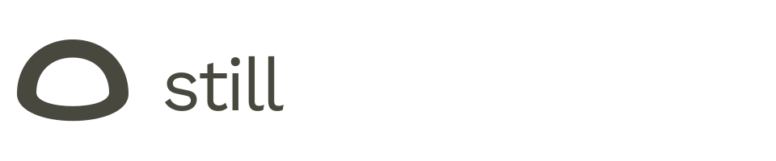
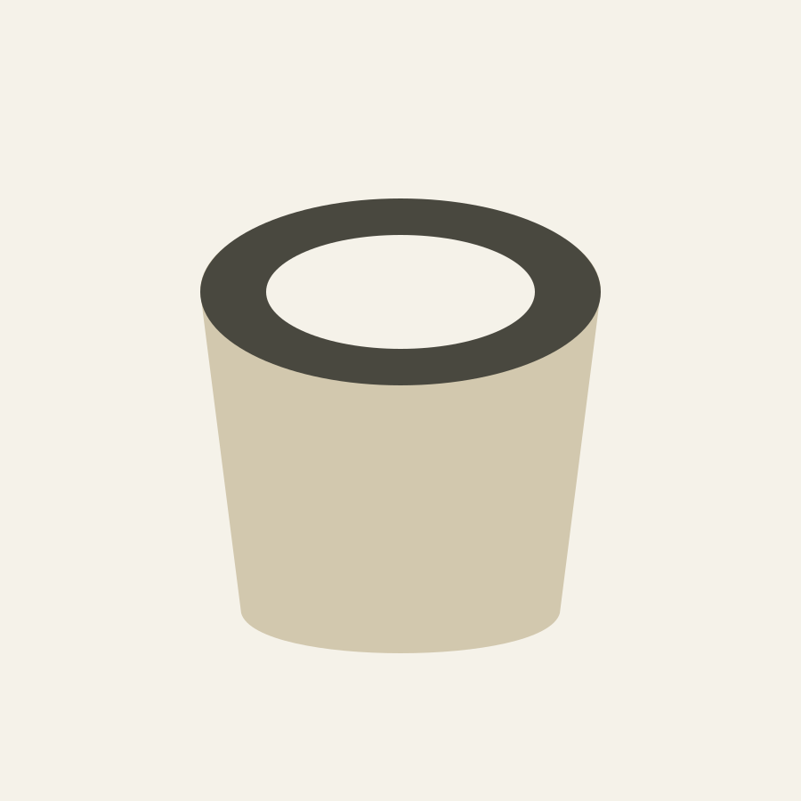
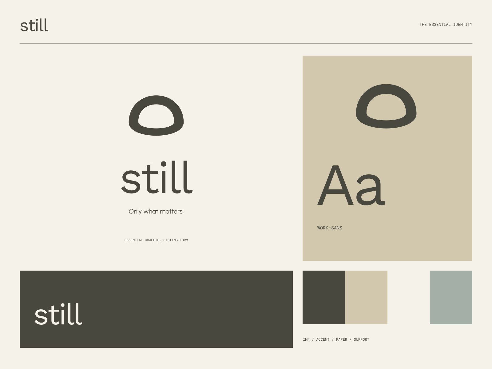

01
A reason to be here
Every object starts with a clear purpose.

DURABLE OBJECTS / CONSIDERED LIVING
Only what matters. Useful enough to keep.

A coherent little world
Useful enough to keep. Only what matters.
01
Every object starts with a clear purpose.
02
Honest details and the character of well-chosen materials.
03
Thoughtful things designed to become quietly familiar.

The point of view
Low-relief ceramic studies, grounded soft geometry, tonal paper labels, and quietly confident geometric type. Fewer elements make every proportion more important.